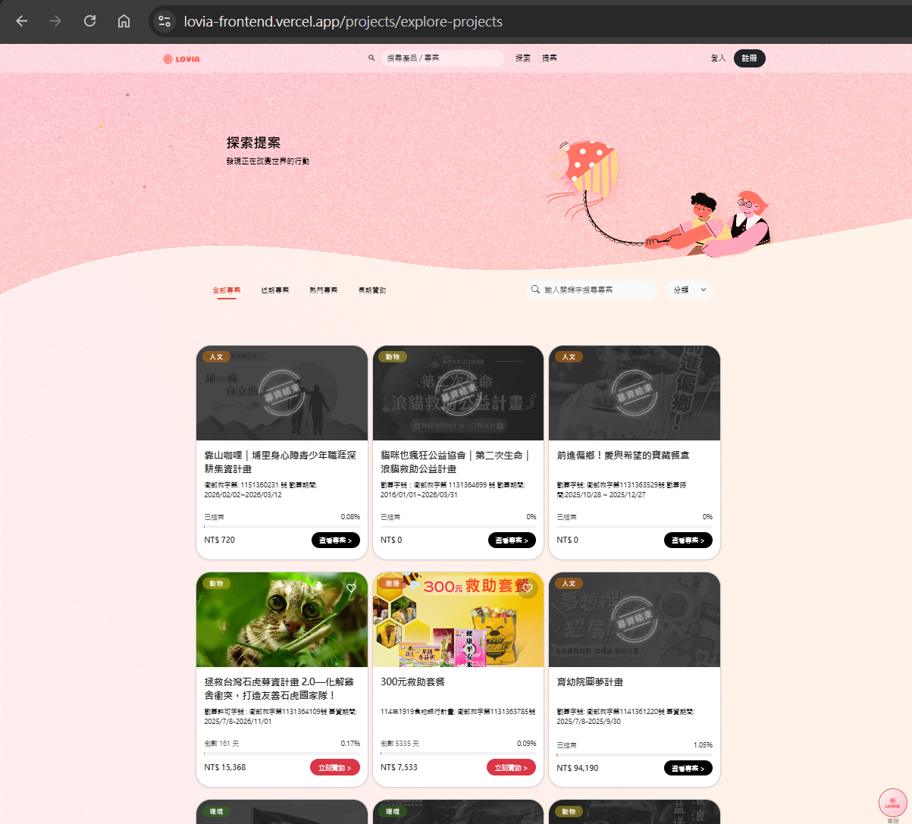
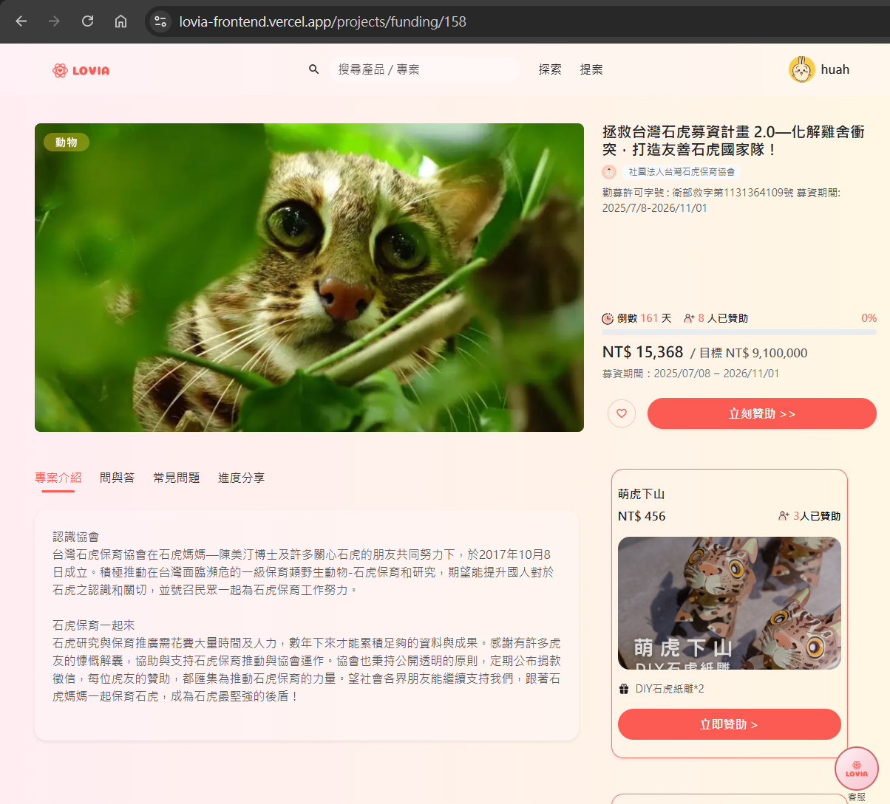
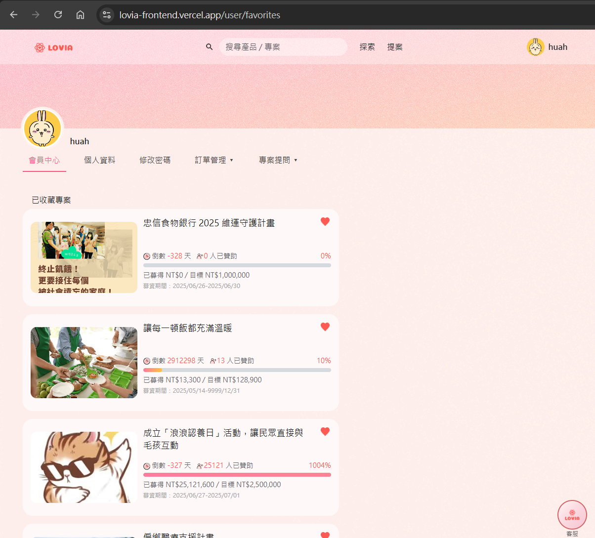
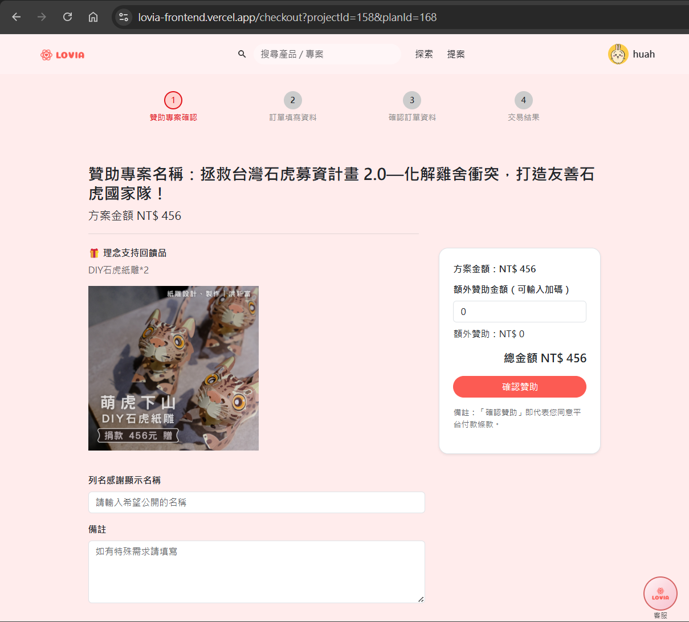
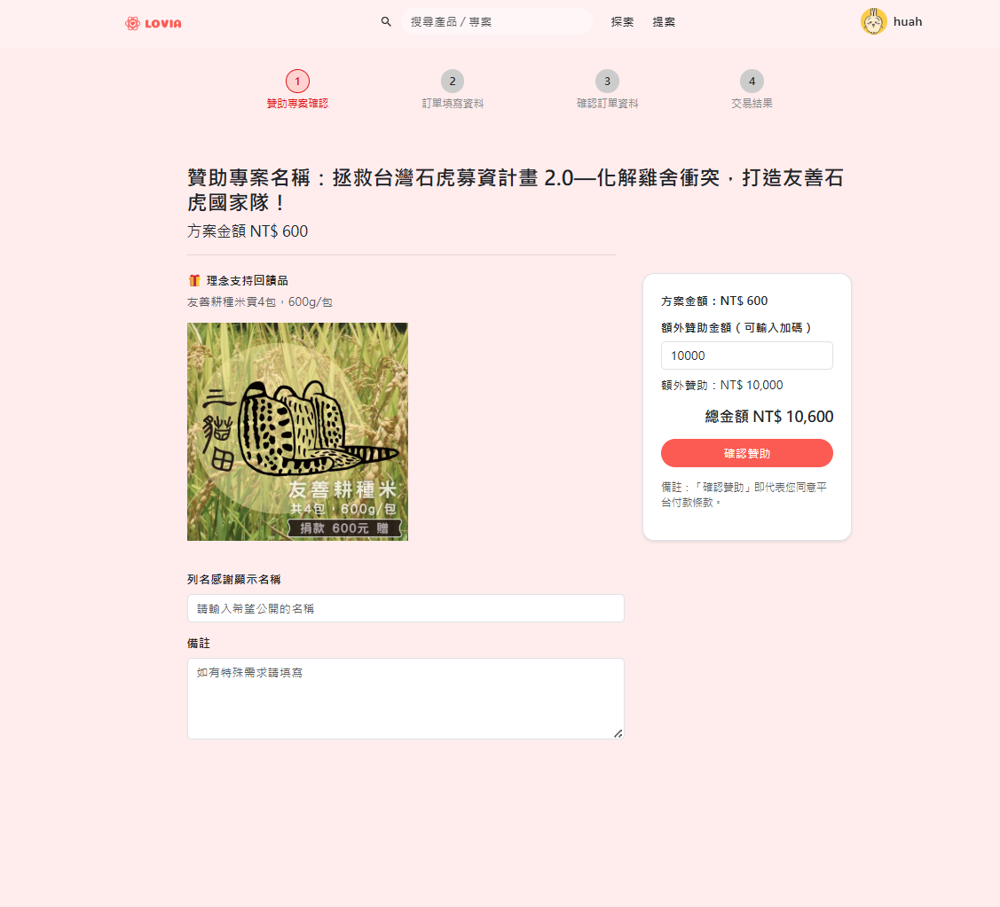
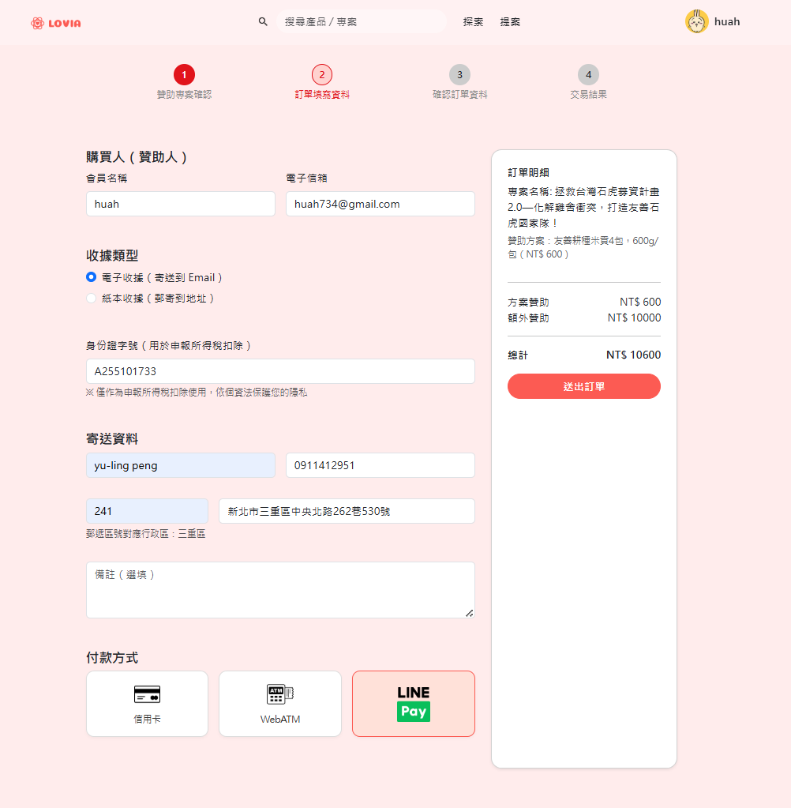
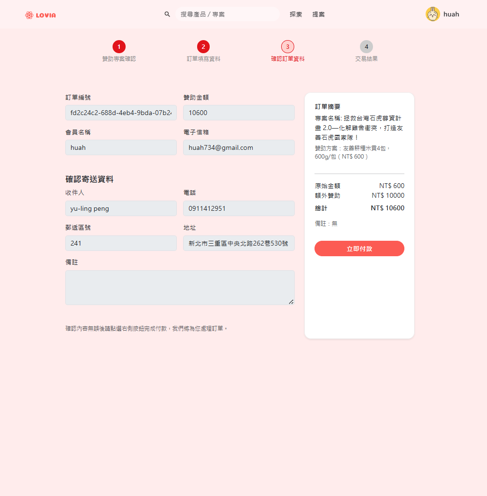
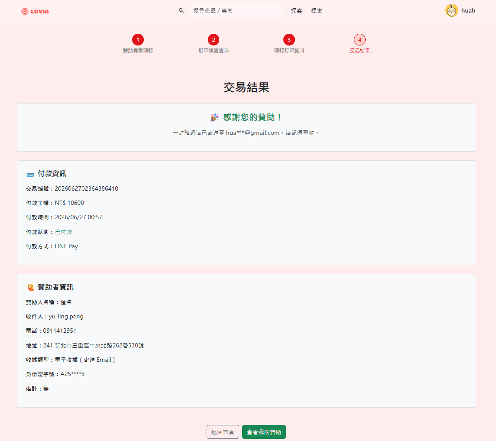

FULL-STACK PLATFORM CASE STUDY
LOVIA
Crowdfunding Platform
Lovia 是一個公益募資平台，讓使用者能探索公益專案、選擇贊助方案，並透過安全的付款流程支持不同的公益計畫。平台整合會員系統、第三方金流與 AI 智慧客服，提供完整且流暢的使用體驗。

FULL-STACK PLATFORM CASE STUDY
Crowdfunding Platform
Lovia 是一個公益募資平台，讓使用者能探索公益專案、選擇贊助方案，並透過安全的付款流程支持不同的公益計畫。平台整合會員系統、第三方金流與 AI 智慧客服，提供完整且流暢的使用體驗。
PROJECT OVERVIEW
Lovia 讓使用者可以瀏覽募資專案、選擇贊助方案、建立訂單並完成付款。平台同時提供會員登入、第三方登入、AI 客服與後台資料管理，形成完整的募資服務流程。
前後端整合開發
團隊專題 / Full-stack Platform
Vue / Bootstrap / Axios
Node.js / Express / PostgreSQL
PROBLEM
募資平台不只是展示專案，還需要處理會員狀態、贊助方案、訂單建立、付款結果與交易回傳。只要其中一段資料不同步，就會影響使用者信任與付款流程。
SOLUTION
我負責整合會員驗證、API 串接、訂單資料、LINE Pay / ECPay 金流與 AI 客服，讓使用者能從瀏覽專案到完成付款，順利走完整個募資流程。
PRODUCT SCREENS
透過多個頁面呈現平台功能，包含首頁、專案瀏覽、專案詳情、贊助流程與會員相關頁面。





USER FLOW
瀏覽公益專案
查看專案內容與進度
選擇贊助方案
登入或建立會員
建立贊助訂單
完成第三方付款
更新訂單狀態
KEY FEATURES
支援註冊、登入、JWT 驗證與會員資料管理。
整合 Google OAuth，降低註冊門檻並提升登入便利性。
使用者可查看專案介紹、目標金額、贊助方案與進度。
串接方案選擇、訂單資料與付款狀態，建立完整贊助流程。
處理付款請求、交易回傳、付款狀態更新與訂單結果。
結合 Google Gemini，提供平台操作與募資流程問答。
SYSTEM ARCHITECTURE
Lovia 採前後端分離架構，前端透過 API 與後端溝通，後端負責會員驗證、資料處理、訂單建立、金流串接與 AI 服務整合。
使用者瀏覽專案、登入會員與送出贊助流程。
前端統一呼叫後端 API，處理資料同步。
處理會員驗證、訂單建立與服務邏輯。
儲存會員、專案、訂單與付款狀態。
串接 LINE Pay / ECPay 並接收交易回傳。
提供平台操作與募資流程的智慧客服回應。
PAYMENT FLOW

使用者選擇贊助方案並送出訂單資料。

後端建立訂單，產生付款請求並串接 LINE Pay / ECPay。

使用者跳轉至第三方付款頁面完成付款。

金流平台回傳交易結果，後端更新訂單狀態。
TECH STACK
Vue.js / Pinia / Router / Axios / Bootstrap 5
Node.js / Express.js / RESTful API
PostgreSQL / TypeORM
JWT / Google OAuth
LINE Pay / ECPay
Google Gemini / AI Customer Service
REFLECTION
透過 Lovia 專案，我練習將前端畫面、後端 API、會員驗證、金流流程與 AI 服務整合成完整平台。這個專案讓我更理解，全端開發不只是完成單一功能，而是要讓每個資料狀態在使用者流程中正確銜接。